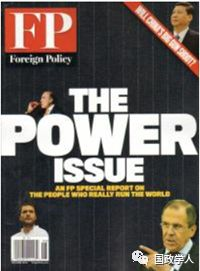

收录于合集
简 介
**
**
【作者】 ****
尤瓦尔 ·赫拉利（Yuval Noah Harari），1976年生于以色列，牛津大学历史学博士，青年怪才、全球瞩目的新锐历史学家。现任耶路撒冷希伯来大学的历史系教授。擅长世界历史和宏观历史进程研究，在学术领域和大众出版领域都有很大的兴趣。 代表作品 ： **** 《人类简史》《未来简史》《今日简史》 。 ****
【 编译】刘金晶 ****
【校对】 韦世谦
【审核】 王国欣
【来源】 Foreign Policy. Winter 2019,Issue 231, p52-54.
【期刊】 《外交政策》（ ForeignPolicy ）是一本由亨廷顿及华伦•戴米•曼舍尔（Warren DemianManshel）于1970年创办的美国双月刊杂志，被公认为是世界上最有影响力的国际时事刊物之一。除了时事报道，该杂志每年发布的“全球化指数”和“失败国家指数”列表也备受关注。

谁将赢得人工智能的胜利 ? ****
Who Will Winthe Race for AI?
China and theUnited States are leading the pack and the laggards face grave dangers.
尤瓦尔·赫拉利（Yuval Noah Harari）
内容提要
本文试图探究日益激烈的人工智能国际竞赛给后发小国带来的巨大压力。本文认为人工智能技术的发展进一步拉大了强国与弱国之间的差距，在这一领域，发展较慢的国家将面临 数据殖民主义 的危机。为应对这一挑战，本文为AI领域发展较为落后的国家提供了两种解决方式： 选择进入当前被大国忽视 的 领域 或者 加大对本国数据的立法监管 。
文章导读
人工智能(AI)的发展正如火如荼地展开，大国之间的较量已然日渐激烈。美国和中国在这一领域持续领先，其他国家特别是发展中国家，难以望其项背。如果他们不迎头赶上，其经济和政治前景将日渐严峻。首先，它们面临着十分严重的经济挑战，因为智能化的世界对这些国家赖以提供的不熟练劳动力的需求将会大大减少。其次，其政治风险也同样严峻。人工智能如今可以通过收集、破译个人数据，从而预测和操纵人类的想法，进而破解人类。例如，多家报社曾经揭露，剑桥分析公司(Cambridge Analytica)曾经通过利用美国选民的“脸书”数据预判美国大选走势。
**1
**
数据殖民主义 ****
所有国家 ——不仅限于超级科技大国，都将感受到人工智能革命带来的震波。但是，对于这一领域中发展落后的国家而言，人工智能给其带来了巨大的挑战。为了“掌控”人类，政府和企业需要获取大量关于人类真实行为的信息，因此数据可能成为世界上最重要的资源。但世界上大部分的数据资源都集中在美国、中国和两国的公司手中。
如果这一趋势持续发展，世界可能很快就会出现一种新的殖民主义—— 数据殖民主义 ， 即全球的原始信息汇集于少数几个大国手中，并由其进行加工，进而 被用于 在全世界实行控制 。例如，旧金山或上海的数据巨头可以编制远在他国的政客和官员的全部医疗和个人历史资料，并利用这些来影响他们自身或者操纵公众对他们的看法。
除此之外，那些掌握着数据的人最终不仅会重塑未来的世界经济和政治，还会重塑未来的生命。人工智能和生物技术的结合对于未来重新设计身体，大脑和思想的尝试至关重要。在美国和中国能够接触到这些技术的精英们依照其各自的价值观和利益，决定每个人的发展进程。他们会选择牺牲他们所认为的多余的人的属性，来换取他们认为有用的能力的提升，比如以牺牲人的灵性换取遵守纪律和死记硬背的能力的提升。
**2
**
落后国家应对方式 ****
作者认为在这一竞赛中，较为落后的国家有两种选择： 加入或监管 。
1、 加入
较小的国家不太可能凭一己之力创建出自己的谷歌或百度。但是欧盟28个成员国（英国未实质性脱欧）或拉丁美洲的南锥体国家（注:南锥体，Cone South，指南美洲大陆的形状，特别是下半部（按地图的上北下南）呈现一个倒悬的尖尖锥体，指向南极，这就是南锥体）联合努力则可能会取得成功。为了扩大其成功的机会，作者建议此类国家应重点关注“领先者”迄今所忽视的领域。到目前为止，人工智能的发展主要集中在企业和政府对个人的监控系统上。然而，相反的一面也同样为世界需要，即个人对企业和政府的监督，例如，建立更好的机制打击腐败和解决警察暴力等问题。“后来者”可以为自己开辟一条道路（niche），以制衡数据超级大国。
2 、监管
如果“后来者”无法与人工智能领跑国家竞争，那么至少也可以尝试对这一竞赛进行监管与规范。他们可以建立严格的法律制度，带头规范最危险的新兴技术，如奥顿- 奥米斯武器系统以及人为增强能力的“超级人类”技术。正如各国制定法律保护本国的自然资源一样，它们也可以对数据采取同样的措施。
国际矿业公司必须向它们开采铁矿石的国家支付一定的费用，收集数据的科技公司也应如此，尤其是当数据收集可能对当地居民造成伤害时。例如，在开发无人驾驶汽车的过程中，一个至关重要的阶段是让汽车在真实的生活中行驶，以便收集事故数据，然后利用这些数据来完善这项技术。发达国家已经对无人驾驶汽车施加了严格的限制，这种限制可能会持续到这些汽车的安全性得到保证为止。那么，企业可能会倾向于在监管较为宽松、致命事故较少令人侧目的发展中国家进行这项技术测试。医疗数据的搜集情况也与此相类似，这些数据来源于低成本的、隐私法不完善的发展中国家，然后在人工智能中心进行收集和处理，最终人工智能中心将在这项研究中获益最多。
对于那些提供关键数据的国家来说，现在开始要求更高的回报为时尚早。他们可以创建一个数据出口国的组织，这将极大地扩大他们对全球亚马逊(Amazon)和阿里巴巴(Alibabas)的影响力。如果他们开始分享数据收集的利润，那么他们将有方法来应对机器人取代纺织工人和卡车司机带来的经济冲击。
实力较弱的国家能否避免被数据殖民还远未确定。但他们必须尝试，如果他们对AI的发展采取逃避心态，仅专注于眼前的问题而忽视人工智能竞赛，未来的命运将由不得他们自己来掌控。
本文由国政学人微信平台独家编译首发
** 扫描下方小程序码查看原文p df**
更多阅读
【国际政治】IS杂志：糟糕的世界：国际政治中的负面偏见 | 国政学人
【朝核问题】梅惠琳：中国军方可以帮助确保朝鲜核武器安全吗？| 国政学人
【民粹&民族】穆勒：假旗行动：民族主义复兴的迷思 | 国政学人
国政学人 （ID：guozhengxueren)
为方便学人及时阅读高质量文章
别忘把国政学人设置 星标 哦~